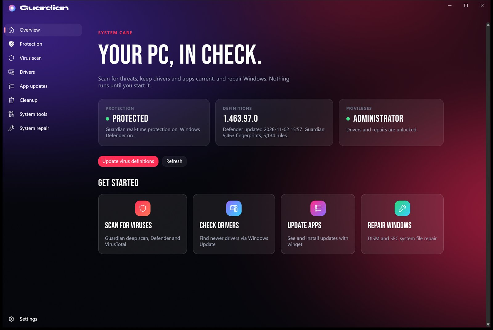
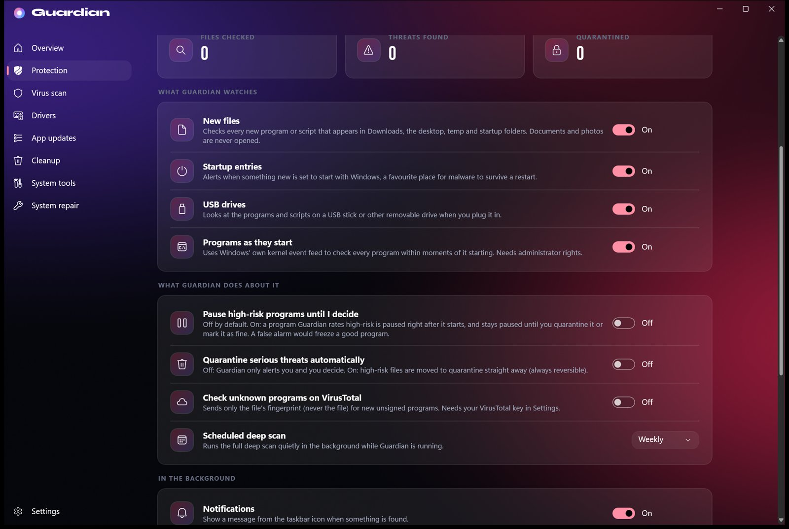
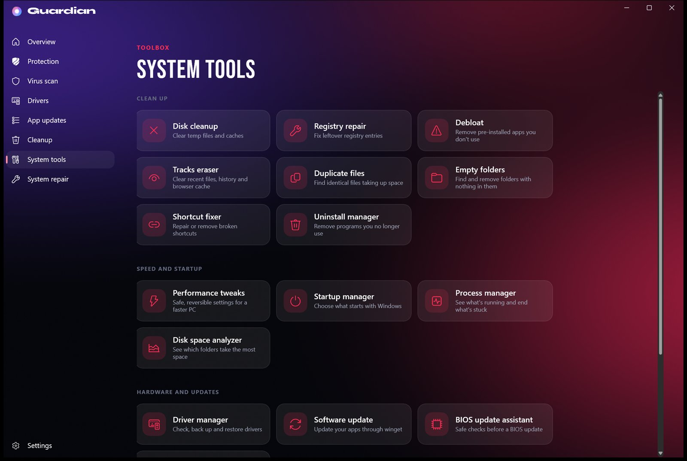
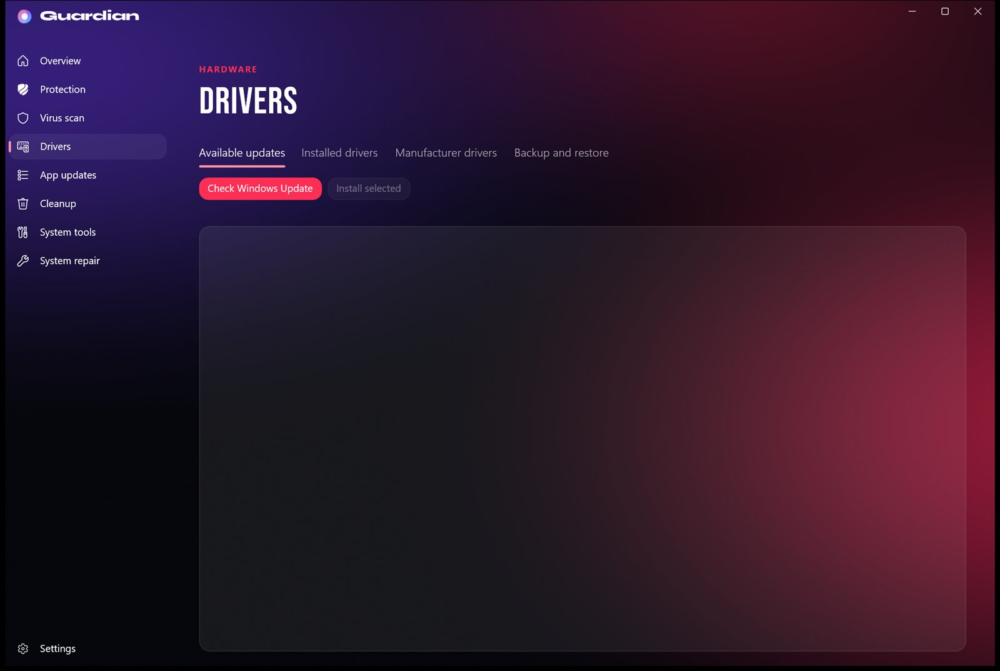

Watch new files.
Checks every new program or script that lands in Downloads, the desktop, temp and startup folders. Documents and photos are never opened.
Guardian is an antivirus with a switch for every shield. It watches new programs, startup changes and USB drives in real time, checks them with its own engine, and tells you exactly why it flagged something.
Guardian opens to a clear status, your protection switches and everything it has caught.

No scary pop-ups and no mystery scores. Every alert comes with the reasons behind it, and you decide what happens next.
Not available for Mac or Linux yet.
Nothing is bundled into one big on/off button. Every part of the protection has its own switch.
Checks every new program or script that lands in Downloads, the desktop, temp and startup folders. Documents and photos are never opened.
Alerts you when something new is set to start with Windows, a favourite hiding place for malware, checks every USB stick the moment you plug it in, and (as administrator) every program within moments of it starting.

Looks where malware hides: startup entries, scheduled tasks, services, running programs, kernel drivers and temp folders. Run it yourself, or daily or weekly in the background.
A toolbox for the rest of your PC: registry repair, debloat, tracks eraser, startup and process managers, disk analyzer and a safe BIOS update assistant.

Finds outdated drivers, backs them up and restores them, and compares chipset, audio, LAN, GPU and CPU drivers with your manufacturer's download list.

From the moment something appears on your PC to the moment you decide what happens to it.
Watchers see new files in Downloads, the desktop, temp and startup folders, new startup entries, USB drives and, as administrator, every program the moment it starts.
Guardian's own engine checks the digital signature, where the file lives and how it behaves, then 9,000+ known-bad fingerprints and 5,000+ YARA rules. All of it on your PC.
Anything medium-risk or worse becomes an alert with the reasons in plain words. Optionally Guardian quarantines serious threats, or pauses a high-risk program until you decide.
Quarantine moves a file aside and never deletes it. Restore it any time, or mark it as fine so it isn't raised again. Every alert stays in your history.
With administrator rights, Guardian subscribes to Windows' own kernel process events (the Microsoft-Windows-Kernel-Process provider). Windows reports every new program to Guardian within moments, Guardian checks it, and can pause it.
Guardian doesn't rely on Windows Defender. It runs its own checks, weighs what it finds from several angles and shows you each reason.
Runs quietly from the taskbar, starts with Windows if you want it to, and tells you when it finds something.
Hover and see how it feels. Automatic quarantine and the VirusTotal lookup start switched off.
From LOLDrivers and signature-base, matched on your PC.
Weighed as evidence by the rule's confidence and the file's signature, never as a verdict.
The optional VirusTotal check sends only a SHA-256 fingerprint, and only with your own key.
Optional memory scanning refuses to run while EasyAntiCheat, BattlEye or Vanguard is active, so it can't put your account at risk. The watcher runs at low priority.
Quarantine moves a file aside and you can restore it any time. "It's fine" stops a file being raised again. Every alert stays in your history with its reasons.
An antivirus should be honest with you.
Yes. It's free, has no ads and doesn't need an account.
No. Guardian's real-time protection, deep scan, hash lists and signature rules all work without it, so it runs fine on a PC where Defender is off or was replaced. If Defender is on, the two work side by side and Guardian shows both. Guardian runs in user mode: it sees a file right after it appears and a program the moment it starts (as administrator), and it can pause a risky one, but it cannot stop a program before it starts the way a kernel-level antivirus can.
Never. The optional VirusTotal check sends only a file's SHA-256 fingerprint, and only when you switch it on and add your own key.
The watcher runs at low priority and only looks at new programs and scripts, not at documents or game files in use. Memory scanning is off by default and won't run while an anti-cheat is active.
Guardian isn't signed with a paid code-signing certificate yet, so SmartScreen doesn't recognise it at first. Choose More info, then Run anyway. The installer's checksum is published with every release, and Guardian checks it before it updates itself.
It never deletes. Quarantine moves a file aside and you can restore it, and "It's fine" stops a file being raised again.
Not yet. Guardian is for Windows 10 (1809 and later) and Windows 11, 64-bit.
Guardian checks its GitHub releases, verifies the installer's checksum, installs the update silently and reopens. You can turn the automatic check off in Settings.
Real-time protection, one switch at a time.